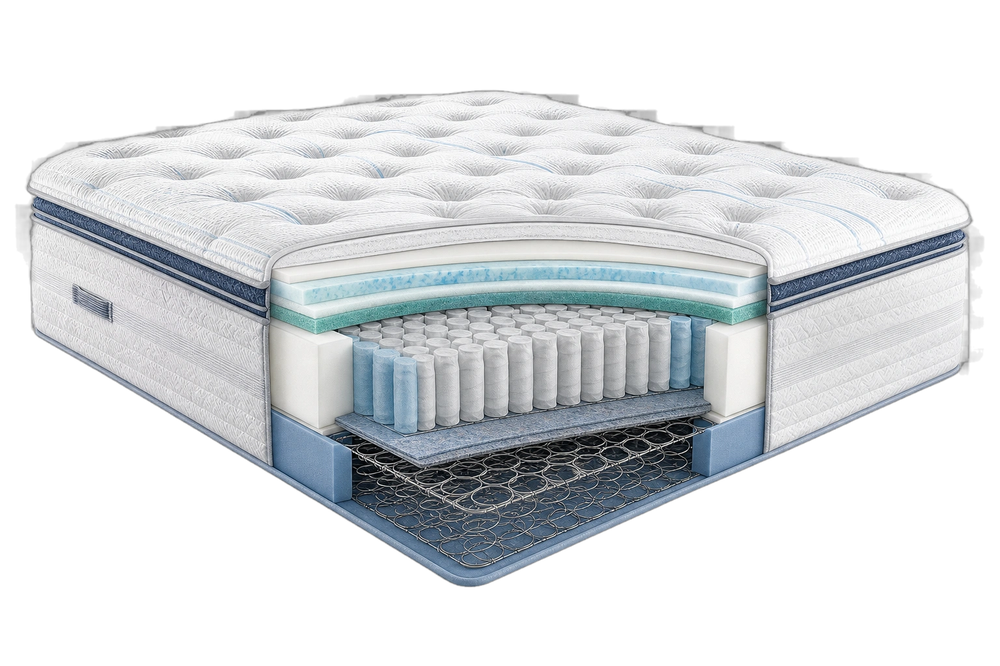

Start with evidence
Research the exact mattress by name.
Construction, policies, independent findings, owner patterns, and missing evidence kept separate, so you can make a more informed choice.

Research-based construction visual · not a physical teardownOur goal is simple: surface the evidence so you can choose with confidence.